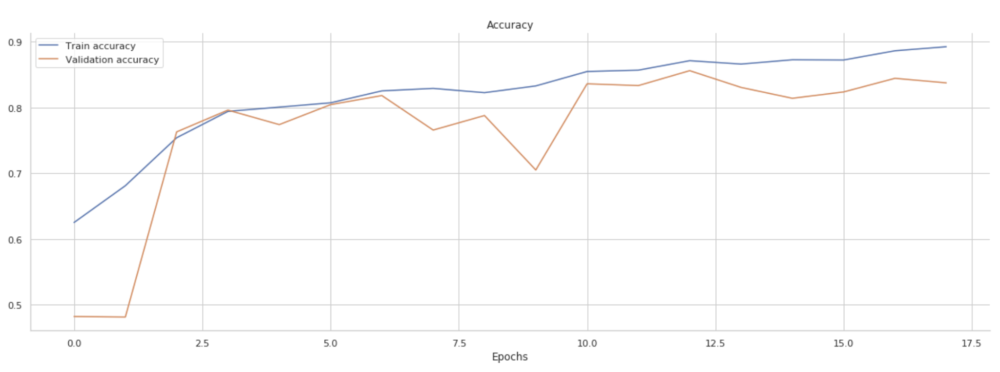

Diagnosis Report
Global Explanation
Data
The data comes from Aravind Eye Hospital, consisting of 3662 retina images taken using fundus photography with patients demographic information(age, gender), names are compeletly hidden for privacy. A clinician has rated each image for the severity of diabetic retinopathy on a scale of 0 to 4. We can see that female consists 80% and male 20%, suggesting our model could potentially perform better on female patients' scans. Age are from 20-80 distributed uniformly. And for the severity label, 0 is the most, then 2 consists large amount, and class 1,4,3 are fewer number.
Model Architecture

We use in our product ResNet50, which is a deep convolutional neural network architecture consisting of 50 layers and is widely used in image recognition tasks. It is known for its high accuracy, robustness and efficiency, making it a popular choice for various computer vision applications. The model is designed to handle complex image data efficiently and accurately, with a total of 27,794,309 parameters. This extensive number of parameters allows ResNet50 to learn detailed and intricate patterns in the data, leading to high performance across many challenging datasets.
Model Accuracy
Our model, based on the ResNet50 architecture, has demonstrated strong performance in detecting diabetic retinopathy from smartphone-captured eye images. Throughout its training phase, the model achieved an impressive accuracy of 0.89, indicating a high level of reliability in identifying patterns indicative of the condition. When evaluated on a separate test dataset, the model maintained a robust accuracy of 0.84, confirming its effectiveness and generalizability in real-world scenarios. This performance underscores the model's potential as a valuable tool in medical diagnostics, particularly for accessible screening in diverse settings.
Model Confusion Matrix
The confusion matrix displayed showcases the performance of our diabetic retinopathy detection model across five categories, from '0-No DR' to '4-Proliferative DR.' The diagonal elements represent the proportions of true positive predictions for each class, indicating that the model is highly accurate in identifying '0-No DR' with 98% accuracy. It also performs well for '1-Mild' and '2-Moderate' cases with 72% and 88% predicted correctly respectively. However, there is room for improvement in '3-Severe' and '4-Proliferative DR' categories, with accuracies of 36% and 52%, respectively, suggesting a lower accuracy in these advanced stages. For '3-Severe' and '4-Proliferate DR the model tend to predict as '2-Moderate'y, underestimating the serverness, therefore it needs physician's attention in the '2-Moderate' prediction, because other classes may be wrongly predicted as '2-Moderate'.